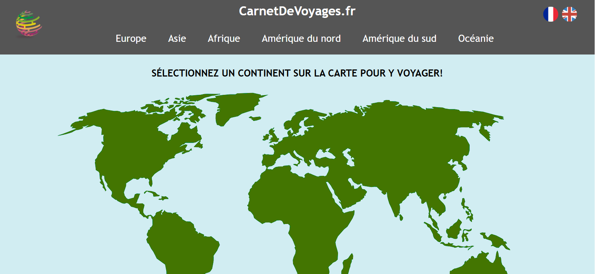
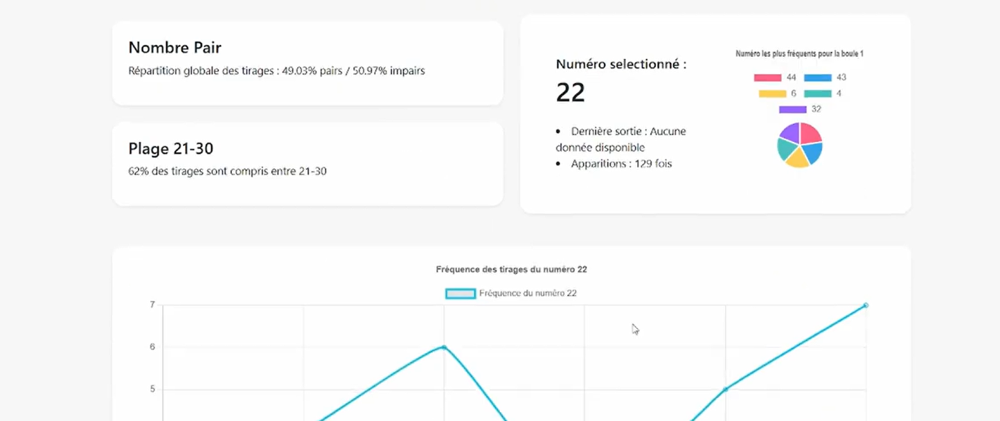
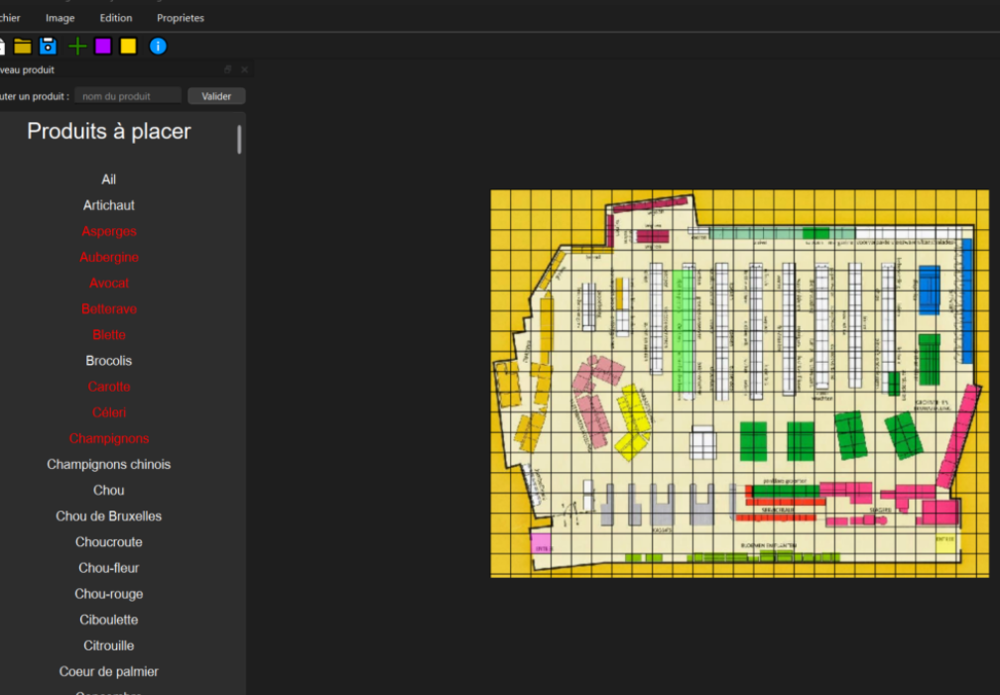
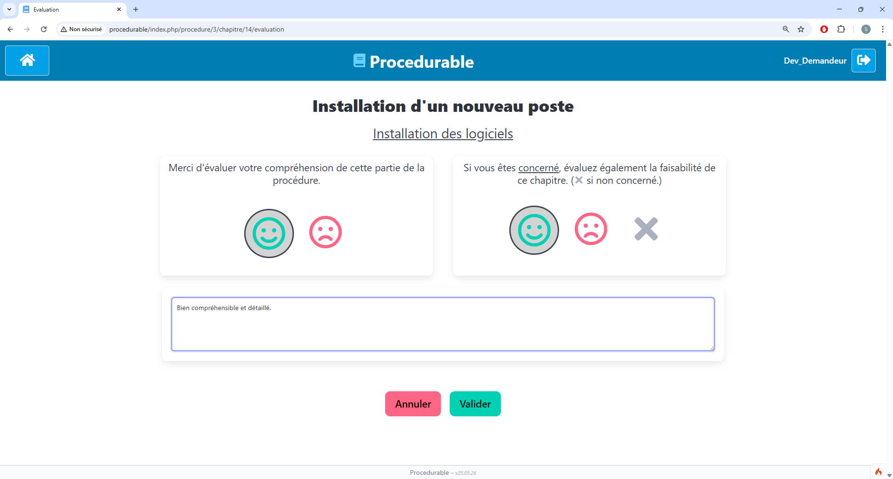
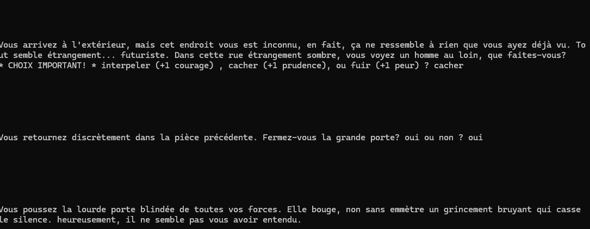
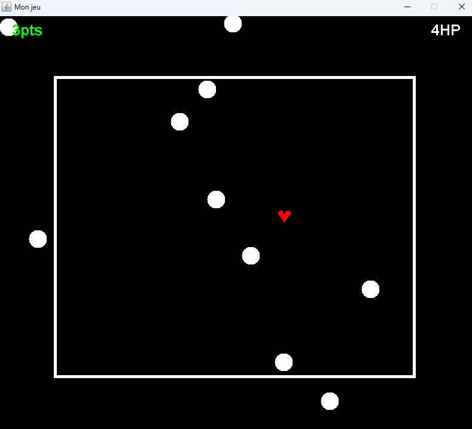
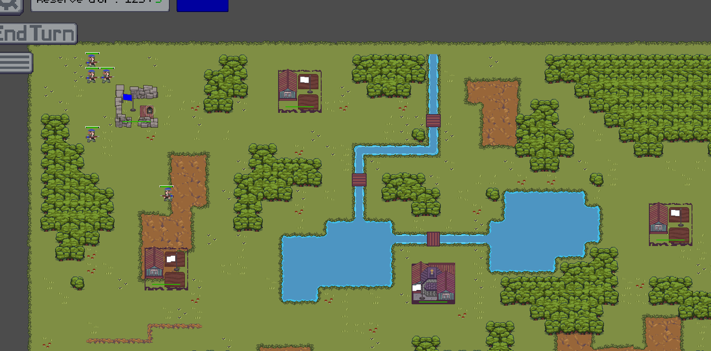
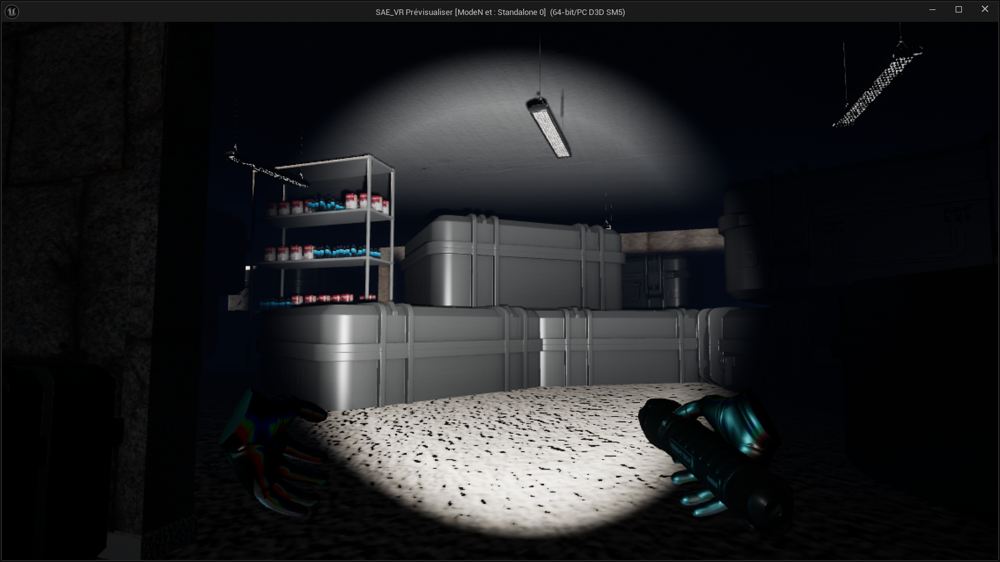

Mes compétences en développement informatique sont très vastes, néanmoins, parmi tous les projets auxquels j'ai pu prendre part, deux aspects me plaisent particulièrement : le développement web et la création de jeux vidéo. Voici quelques-un d'entre eux qui m'ont marqué, tout autant académiques que professionnels ou personnels.

Premier projet réalisé lors de mes études, CarnetDeVoyages.fr est un site web de type blog, développé en simple HTML/CSS. Il était disponible en français et anglais et était responsive.
Le client pouvait y documenter ses voyages, répartis sur une carte du monde interactive, et y ajouter des articles et photos. L'utilisateur pouvait donc choisir un continent sur la carte, puis un pays préçis, afin de lire les articles sur celui-ci.
Ce projet m'a permis de mettre en oeuvre non seulement mes bases en développement web, mais aussi en gestion de projet, avec la réalisation en amont d'une maquette, d'un persona, et d'un cahier des charges.

Peojet mettant en place une API, une base de données, et un site web de prédictions de numéros Loto. Réalisé principalement en PHP, avec une base de données MySQL, et un front-end en HTML/CSS/JS.
L'utilisateur pouvait se créer un compte, et déterminer, à travers un algorithme utilisant la probalité en se basant sur des milliers de tirages précédents, les numéros les plus susceptibles de sortir lors du prochain tirage. Il pouvait ensuite enregistrer ses pronostics, et les comparer avec les résultats du tirage.
Il pouvait aussi crééer une combinaison personnalisée, et obtenir différentes statistiques sur chacun des numéros, comme la derniere fois qu'ils est sorti, ou sa fréquence de sortie à long terme grâce à de la DataVisualisation.

Développée à l'aide de PyQt, ces deux appplications IHM permettent à leur utilisateur de gérer les stocks des produits dur un plan ou de faire leur liste de courses.
La première application, destinée au personnel d'un magain, permet à celui-ci d'importer le plan de son magasin, d'y placer un quadrillage, et de placer dessus tous ses produits aux emplacements de son choix, ainsi que l'entrée et la sortie du magasin. Un fichier json est ensuite généré.
A l'aide d'un fichier json généré par la première application, un client peut utiliser la deuxième poue mettre en place sa liste de course. Un algorithme de pathfinding est ensuite utilisé pour lui indiquer le chemin le plus court pour trouver tous les produits de sa liste, en partant de l'entrée du magasin, et en finissant à la sortie.

Mon premier projet professionnel, réalisé lors d'un stage à la Région Hauts-de-France, consistait à développer un outil interne de notation de procédures. Réalisé en PHP avec une base de données MySQL, et un front-end en HTML/CSS/JS. Deux aspects principaux à cet outil web :
Les agents régionaux pouvaient se connecter à l'aide de leurs identifiants, et noter les différentes procédures qu'ils suivaient dans leurs interventions (ex. procédure "installer et configurer un nouveau poste"), en fonction de différents critères. Ils pouvaient aussi ajouter des commentaires pour expliquer leur notation.
Les managers d'équipes pouvaient ensuite consulter les différentes notations de leurs agents, et les commentaires associés, afin d'identifier les procédures qui posaient le plus de problèmes, et ainsi mettre en place des formations pour y remédier, ou contacter le rédacteur pour qu'il puisse améliorer la procédure.

Mon premier projet de jeu vidéo, réalisé à l'aide du langage C, consistait à créer un jeu narratif textuel, dans lequel le joueur incarnait un personnage évoluant dans une société dystopique. Le joueur devait faire des choix qui influençaient le déroulement de l'histoire, et la fin du jeu.
Ce fut très enrichissant d'apprendre à ajouter un aspect artistique à un projet de développement, et de devoir faire preuve de créativité pour créer une histoire captivante, et des choix intéressants pour le joueur.
Le jeu possède différents embranchements et fins différentes, déterminées par ses choix qui incrémentent des statistiques personnelles. Il est disponible en français et anglais, et est entièrement jouable à l'aide du clavier, avec une interface textuelle simple mais efficace.

MG2D est une bibliothèque de développement de jeux 2D en Java, normalement utilisée dans le cadre des enseignements de ma formation, je m'en suis servi pour créer de petits projets personnels.
Ma familiarité avec le Java m'a permis de comprendre rapidement les différentes fonctionnalités de la bibliothèque, et de créer des jeux d'arcade simples, comme un jeu de plateforme, ou un jeu de réactivité inspiré d'un de mes jeux favoris.
Graphiqement, ces jeux sont très simples, avec des graphismes basiques, mais ils m'ont permis de me familiariser avec les concepts de base du développement de jeux vidéo, comme la gestion des collisions.

Développé à l'aide de Godot Engine, Gladius Dominus est mon projet le plus ambitieux à ce jour. Il s'agit d'un jeu d'attaque/défense en tour par tour dans lequel le joueur doit placer stratégiquement ses différentes unités pour vaincre le joueur adverse et protéger sa propre base.
Jouable à deux joueurs ou contre une IA, le jeu propose différentes unités avec des caractéristiques uniques, comme la portée d'attaque ou de déplacement, la force, la santé, ... Chaque unité possède sa propre IA et prend en compte l'état du jeu à chaque tour.
Le projet a bénéficié d'une gestion rigoureuse, avec une planification détaillée, et une utilisation efficace des fonctionnalités de Godot pour créer un jeu fluide, beau et agréable à jouer.

Mon dernier projet de jeu vidéo en date, réalisé à l'aide d'Unreal Engine, The Lab est un jeu VR réalisé en seulement 5 jours.
Le joueur doit retrouver son chemin dans un laboratoire abandonné, et résoudre différentes énigmes pour s'échapper.
Le projet intègre différentes mécaniques de jeu, comme la manipulation d'objets simples (lampe torche), ou la résolution d'énigmes basées sur l'environnement du joueur (retrouver un code invisible sans un objet spécifique). Le projet a été réalisé dans un temps très court, mais j'ai pu apprendre à utiliser Unreal Engine et à créer une expérience VR immersive et agréable à jouer.